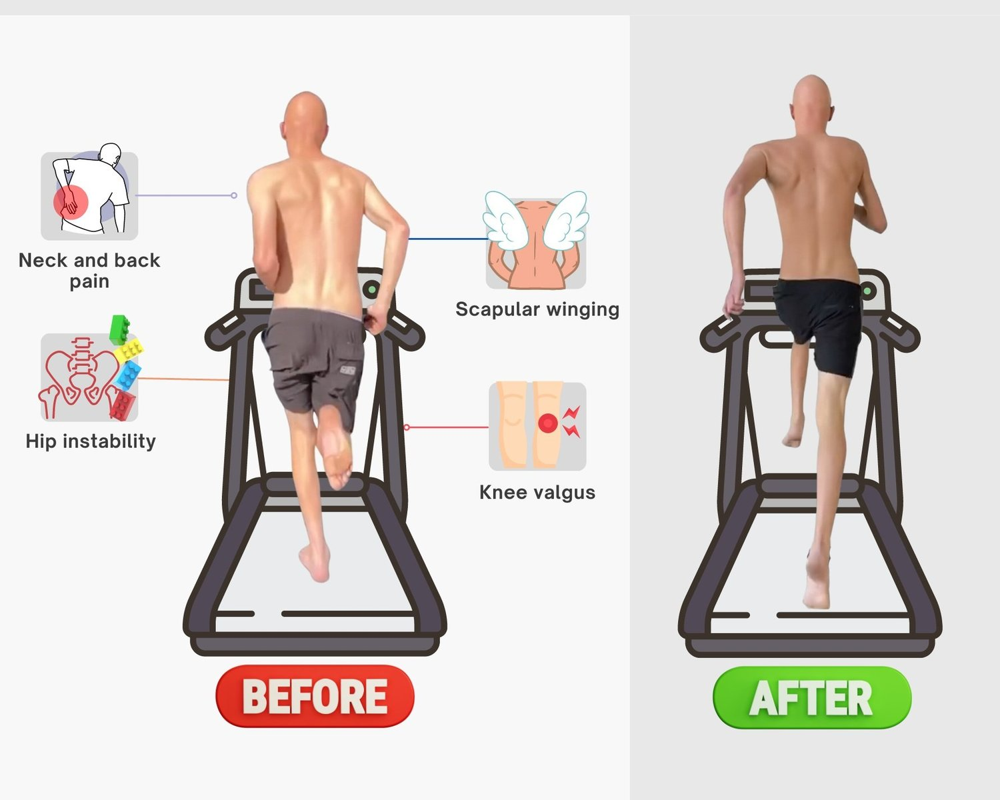

What Is Pain, Exactly?
Pain is a complex and subjective sensory and emotional experience that is typically associated with tissue damage or potential harm to the body. It serves as a warning signal that something may be wrong and requires attention. But what if you are pretty sure that ‘nothing is wrong.’ Can the pain be a useless signal?
Physiologically, pain involves the transmission of nerve signals from the site of injury or potential damage to the brain. These signals travel through the nervous system and are processed in various regions of the brain, including those responsible for sensation, emotion, and cognition. The brain interprets these signals and creates the perception of pain, which can range from mild discomfort to severe agony.
So to answer the former question, if you are experiencing pain, SOMETHING is not right. That ‘something’ may not be tissue damage, but there is damage to some part or system in the body. If somebody tells you nothing is wrong when you’ve been chronically in pain, kindly ignore it.
Let’s begin with some definitions of pain so that we are on the same page:
-
Acute Pain: Acute pain is typically short-lived and occurs in response to a specific injury or condition. It serves as a protective mechanism, prompting individuals to take action to prevent further harm. Once the underlying cause is treated or the injury heals, acute pain usually subsides.
-
Chronic Pain: Chronic pain persists over an extended period, often lasting for months or even years. Unlike acute pain, chronic pain may not be directly related to an ongoing injury or tissue damage. Instead, it can result from conditions such as nerve damage, inflammation, or long-term health issues.
-
Neuropathic Pain: Neuropathic pain is caused by dysfunction or damage to the nervous system itself. It can result from conditions like nerve compression, diabetic neuropathy, or spinal cord injuries. Neuropathic pain is often described as shooting, burning, or tingling sensations.
-
Nociceptive Pain: Nociceptive pain is caused by the activation of pain receptors (nociceptors) in response to tissue damage or inflammation. It can be somatic (arising from skin, muscles, or joints) or visceral (stemming from internal organs). Nociceptive pain is often described as aching, throbbing, or sharp.
-
Referred Pain: Referred pain occurs when pain is felt in an area of the body that is distant from the source of the problem. This phenomenon happens because the nerves from different areas may share pathways to the brain, causing confusion in the perception of pain location.
How Is It Possible To Have Pain If There Is No ‘Damage’ or ‘Injury?’
-
Chronic Inflammation: Chronic inflammation, even at low levels, can lead to ongoing pain. Inflammatory molecules can sensitize nerve endings and contribute to persistent pain sensations. This inflammation can stem from various sources, such as autoimmune disorders, infections, or lifestyle factors.
-
Central Sensitisation: The nervous system can become sensitised over time due to repeated exposure to pain or inflammation. This can lead to an increased perception of pain even in response to non-harmful stimuli. Central sensitization involves changes in the way the nervous system processes pain signals, amplifying pain perception.
-
Nerve Compression: Nerves can become compressed or irritated without evident physical damage. Pressure on nerves can lead to pain, tingling, and numbness, even if there is no overt injury.
-
Neuropathic Pain: Neuropathic pain originates from nerve dysfunction rather than tissue damage. It can result from conditions like diabetes, nerve entrapment, or nerve degeneration, causing pain sensations that may not correlate with visible damage.
-
Dehydrated Fascia: Fascia, the connective tissue that envelops muscles and organs, plays a critical role in maintaining tissue health and movement. Dehydrated fascia can become stiff and less pliable, leading to restrictions in movement, discomfort, and pain. Proper hydration is essential for maintaining the health and function of fascia.
-
Incorrect Loading and Movement Patterns: Poor posture, incorrect biomechanics, and improper loading of joints and muscles can lead to pain. When the body is not aligned or movements are unbalanced, certain areas may experience excessive strain, leading to discomfort.
-
Nociceptive Pain: Nociceptors, specialised pain receptors, can become sensitised and overly responsive to stimuli, leading to pain perception even when the stimulus is not harmful. This phenomenon can be observed in conditions like fibromyalgia. Nociceptive pain is linked to dehydrated fascia.
-
Neurological Changes: Long-term pain conditions can cause neurological changes in the brain and spinal cord. These changes can amplify pain signals and lead to ongoing pain perception even when the initial injury or damage has healed.
-
Dysregulation of Pain Modulation: The body's natural pain modulation mechanisms can become dysregulated, leading to heightened pain sensitivity. This can be influenced by genetic factors, hormones, and neurotransmitters.
Understanding that pain is not solely a response to physical damage but rather a complex interplay of sensory, emotional, and physiological factors is crucial. Proper hydration, healthy movement patterns, stress management, and addressing any underlying psychological issues can all contribute to better pain management and overall well-being.
How Do You Identify Which Type Of Pain You’re Experiencing?
There are a few consistent themes that flow through all of these pain types. Dehydrated fascia is almost always a factor in chronic, unexplained pain. Incorrect loading and movement patterns also play a massive role. In fact, incorrect biomechanics is the leading cause of dehydrated fascia. Incorrect biomechanics also leads to nerve compression, nociceptive pain, dysregulated pain modulation and neurological changes.
So why is biomechanics not the first place people go when a patient presents with unexplained chronic pain?
How Do You Fix Unexplained, Chronic Pain?
You fix your biomechanics.
This is the only way to address the root cause and tackle all of the elements at once. Fixing your biomechanics will also encompass factors such as diet, stress management and sleep. In fact, without addressing factors such as bloating, nervous system dysregulation and poor recovery - you cannot change your biomechanics.
That is why Functional Patterns has been able to cure ‘incurable’ cases of unexplained, chronic pain. We expertly and efficiently tackle the body as a system, not as a set of symptoms; ultimately correcting your body in the correct order of operation. It is extremely important to have your value system in order when correcting complex, chronic pain. Pain can very much imbed itself into your framework and system, and it can take a lot of work to weed it out. Remember, the pain is never there for ‘no reason.’
Whether it is stored in your fascia, in your nervous system, or imbedded in a cycle of chronic inflammation - when you fix these root causes, the chronic pain WILL go away. If there was truly no reason for the pain, it would not be there.

How Do You Fix Your Biomechanics?
As an oversimplification, here is a breakdown of a basic framework we may use to correct biomechanics.
-
Identify Imbalance: The reason you feel pain in the body is because of imbalance. Muscles get tight and joints get achy because the body is out of balance. This is where gait analysis comes into play. Click here to learn more about how we use gait analysis as a primary tool for finding the root cause of chronic pain.
-
Release: The next step is to use myofascial release to hydrate muscles. By hydrating the tissues, they become better primed to shorten as well as not being so stiff. Click here to download a complimentary myo-fascial release guide to get this step started.
-
Reposition & Stabilise: After finding more balance with your body, we then need to make it stick. We do this by making sure the correct muscles fire in the right sequence. Using your gait analysis findings, we make your body more proficient at the part of your gait that are incorrect. This reduces inflammation, corrects loading patterns to reduce compression and rehydrates fascia longterm.
-
Strengthen & Move: The final stage is to create strength and move better. When you dial in the FP principles you not only get rid of pain, but you’ll keep it away for good.
